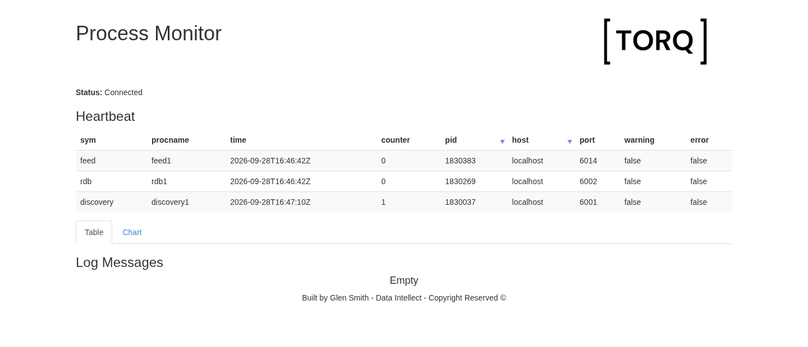

TorQ on PeachQ¶
Run TorQ's Finance Starter Pack on PeachQ: a discovery service, a tickerplant, a
real-time database (RDB), a generated trade feed and the browser process monitor.
TorQ is installed with its own installtorqapp.sh and started with its own
torq.sh. One line of TorQ's monitor code is changed, and this page explains why.

TorQ's process monitor, served by monitor1 on PeachQ, receiving heartbeats over a WebSocket.
A query sent from another process to the running RDB returns live trades, aggregated by symbol:
| sym | trades | volume | vwap |
| symbol | long | int | float |
|========|--------|--------|----------|
| AAPL | 14 | 771 | 83.80952 |
| AIG | 11 | 900 | 26.92084 |
| AMD | 4 | 52 | 32.96019 |
| DELL | 7 | 64 | 12.02 |
| DOW | 3 | 353 | 19.95748 |
| GOOG | 20 | 580 | 71.65279 |
| HPQ | 19 | 612 | 35.94 |
| IBM | 7 | 427 | 42.31597 |
| INTC | 8 | 393 | 50.85028 |
| MSFT | 21 | 1543 | 29.07424 |
What TorQ is¶
TorQ is Data Intellect's open-source framework for building kdb+ applications. It supplies standard processes, such as discovery, tickerplants, RDBs, HDBs, gateways and a monitor, together with shared code for process startup, logging, connection management, timers, heartbeats and access control. The Finance Starter Pack is an example application built on TorQ, with a feed that generates trades and quotes. Both are MIT-licensed.
What had to work¶
TorQ is a demanding test because it uses much of q at once. The table lists what
the five processes relied on. Each row was observed on the running stack with
PeachQ v0.85, mostly by sending queries with q -conn to each process. Counts
vary slightly between runs.
| q feature | What TorQ does with it | Observed on PeachQ |
|---|---|---|
| Loading a code tree | torq.q loads TorQ's common code, the process-type code and the application's code |
Each process loaded 26 to 55 files (count .proc.loadedf). TorQ's code directory has 123 .q files and 11,105 lines. |
| Command-line options and environment variables | torq.sh passes -stackid, -proctype, -procname, -load and -procfile; setenv.sh exports KDBCONFIG, KDBCODE and more |
.z.x holds 12 arguments (16 for stp1), and getenv returns the exported paths. |
.z handlers |
TorQ wraps the message, connection, HTTP, WebSocket, timer and exit handlers for logging and access control | Every process defines .z.pg .z.ps .z.po .z.pc .z.pw .z.pi .z.ph .z.pp .z.ts .z.ws .z.wo .z.wc and .z.exit (stp1: all except .z.pp). A bare PeachQ process defines only .z.ph. |
Authentication with .z.pw |
The processes accept the configured admin:admin user |
admin:admin connects; a wrong password or no credentials are refused with access. |
| IPC and connection tracking | Discovery registers processes; each process records who connects and when they disconnect | stp1's .clients.clients lists the RDB and feed connections and the close times of short query connections (.z.po and .z.pc). |
| Timers | \t drives TorQ's timer table (.timer.timer) |
\t is 200 ms (stp1: 1000 ms). Each process except stp1 has 6 to 11 timer jobs; the feed publishes every 200 ms and heartbeats go out every 30 seconds. |
| Tickerplant publish and subscribe | The feed calls .u.upd on the segmented tickerplant, which publishes to subscribers |
rdb1 subscribes to trade, quote and packets; its trade count rose from 673 to 700 in 3 seconds. |
| Tickerplant logging | stp1 writes one log file per table under data/tplogs |
The trade log grows while the feed runs, and -11!(-2;file) reads its messages back. |
| HTTP and WebSockets | monitor1 serves the monitor page and pushes heartbeats to the browser |
The page returns HTTP 200. A headless Chromium received the initial start message and heartbeat updates (with the change described below). |
Some of this needed exact q behaviour. TorQ's loader records each file in
.proc.loadedf and checks x in loadedf before loading it. The list starts as
enlist enlist"", so the check relies on in being string-atomic:
"apple" in enlist each ("qwe";"apple";"jhjg") must return 1b.
In TorQ issue #765, a TorQ
contributor pointed to q's documented
string-atomic behaviour of in, and PeachQ
implemented it.
If you run your own kdb+ framework, use the table as a checklist: the more of these features your framework shares with TorQ, the more of this run applies to it. This recipe tests TorQ only.
Run it¶
Use Linux x86-64 with Bash, curl, tar and GNU sed. Ports 6000, 6001, 6002,
6009 and 6014 must be free. Run this in a fresh directory. Keep the archive
filenames as shown: TorQ's installer derives its version directory names from them.
mkdir peachq-torq && cd peachq-torq
mkdir peachq
curl -fL https://peachq.org/download/peachq-linux-x64.tar.gz | tar -xz -C peachq
export PATH="$PWD/peachq:$PATH"
TORQ_REV=7e77714a62fb49dc42b11500a96bcfa535ce9a19
FSP_REV=50fcd5ad6d8e50fcd71965010ce38a1fccdad87b
curl -fL "https://github.com/DataIntellectTech/TorQ/archive/$TORQ_REV.tar.gz" -o "TorQ-$TORQ_REV.tar.gz"
curl -fL "https://github.com/DataIntellectTech/TorQ-Finance-Starter-Pack/archive/$FSP_REV.tar.gz" -o "TorQ-Finance-Starter-Pack-$FSP_REV.tar.gz"
tar -xzf "TorQ-$TORQ_REV.tar.gz"
bash "TorQ-$TORQ_REV/installtorqapp.sh" \
--torq "$PWD/TorQ-$TORQ_REV.tar.gz" \
--installfile "$PWD/TorQ-Finance-Starter-Pack-$FSP_REV.tar.gz" \
--releasedir "$PWD/deploy" --data "$PWD/data"
# The one change: register monitor WebSockets directly (see below).
sed -i.before-peachq 's/wssub:{sub\[x;`\];}/wssub:{del[x;.z.w];w[x],:enlist(.z.w;`);}/' \
deploy/TorQ/latest/code/common/html.q
bash deploy/bin/torq.sh start discovery1 stp1 rdb1 feed1 monitor1
sleep 10
q -conn localhost:6002:admin:admin -eval 'select trades:count i,volume:sum size,vwap:size wavg price by sym from trade'
The last command prints one row per symbol, like the table at the top of this page. Trade counts and prices vary with the generated feed. If the table is empty, the RDB is still starting: wait a few seconds and repeat the query.
Open http://localhost:6009/.non?monitorui in a browser. The first heartbeats appear within 30 seconds.
Walkthrough¶
The five processes¶
The installer unpacks TorQ and the Starter Pack under deploy/, writes
deploy/bin/setenv.sh with this directory's paths and creates the data
directories. torq.sh loads that environment and finds q on PATH, so the
PeachQ q runs every process.
| Process | Port | Role |
|---|---|---|
stp1 |
6000 | Segmented tickerplant: receives, logs and publishes the feed |
discovery1 |
6001 | Lets processes find each other by type |
rdb1 |
6002 | Holds today's trades and quotes for queries |
monitor1 |
6009 | Collects heartbeats and serves the browser monitor |
feed1 |
6014 | Generates trades and quotes every 200 ms |
Check them with TorQ's own summary:
bash deploy/bin/torq.sh summary
TIME | PROCESS | STATUS | PID | PORT
16:48:03 | discovery1 | up | 1830037 |
16:48:04 | stp1 | up | 1830157 |
16:48:04 | rdb1 | up | 1830269 |
16:48:04 | hdb1 | down |
...
16:48:05 | monitor1 | up | 1830501 |
...
16:48:06 | feed1 | up | 1830383 |
...
The summary lists all 23 processes in the Starter Pack's process.csv; this
recipe starts five of them. The PORT column is filled only when netstat is
installed.
Query the live RDB¶
q -conn sends an expression to a running q process and prints the result, much
like running it over a handle from hopen. The target takes the same form as
hopen, here with TorQ's admin:admin user. In a new terminal, first run
cd peachq-torq and export PATH="$PWD/peachq:$PATH".
q -conn localhost:6002:admin:admin -eval 'count trade'
1158
Five seconds later:
1229
The count keeps rising as stp1 publishes new trades. The aggregate query from
the setup groups them by symbol: count i counts rows, sum size totals volume
and size wavg price is the volume-weighted average price.
The RDB also holds quote, packets, heartbeat and logmsg, and any q
expression works:
q -conn localhost:6002:admin:admin -eval '5#select from trade where sym=`AAPL'
| time | sym | price | size | stop | cond | ex | side |
| timestamp | symbol | float | int | boolean | char | char | symbol |
|-------------------------------|--------|-------|------|---------|------|------|--------|
| 2026.09.28D15:46:14.604203876 | AAPL | 83.61 | 31 | 0 | R | N | sell |
| 2026.09.28D15:46:15.812567832 | AAPL | 83.82 | 19 | 0 | L | N | sell |
| 2026.09.28D15:46:15.812567832 | AAPL | 83.81 | 51 | 1 | B | N | sell |
| 2026.09.28D15:46:15.812567832 | AAPL | 83.75 | 46 | 0 | K | N | sell |
| 2026.09.28D15:46:16.219041415 | AAPL | 83.79 | 91 | 0 | | N | buy |
Heartbeats and the monitor¶
Each process publishes a heartbeat every 30 seconds. monitor1 keeps the latest
one per process:
q -conn localhost:6009:admin:admin -eval 'select sym,procname,time,counter from .hb.hb'
| sym | procname | time | counter |
| symbol | symbol | timestamp | long |
|-----------|------------|-------------------------------|---------|
| discovery | discovery1 | 2026.09.28D16:48:11.168426700 | 3 |
| rdb | rdb1 | 2026.09.28D16:48:12.527935936 | 3 |
| feed | feed1 | 2026.09.28D16:48:13.202565153 | 3 |
The browser monitor shows the same table and updates it over a WebSocket. This
configuration does not publish a heartbeat from stp1.
Stop the processes¶
bash deploy/bin/torq.sh stop monitor1 feed1 rdb1 stp1 discovery1
Downloaded files, tickerplant logs and process logs remain under the directory.
The one change¶
The setup replaces one line in TorQ's code/common/html.q. The original file is
kept alongside it as html.q.before-peachq.
/ original
wssub:{sub[x;`];}
/ replacement
wssub:{del[x;.z.w];w[x],:enlist(.z.w;`);}
When a browser connects, the monitor's start function subscribes it to
heartbeat, logmsg and lmchart through .html.wssub. That calls
.html.sub, then .html.add, which registers the WebSocket handle and then
builds an empty schema that wssub discards. lmchart is a function, not a
table, so the schema step evaluates @[0#v;sym;g#] with a function v. On
PeachQ, 0# of a function returns (), and applying `g# to sym of that
empty list signals 'type. The error stops start, so the browser never
receives its initial data.
The replacement performs only the registration step. Without it, heartbeat
updates still arrive, but the initial start message does not.
What you have running¶
You installed an unmodified TorQ release and application with TorQ's own scripts, started five communicating processes on PeachQ, queried a live RDB from another process and watched heartbeats in TorQ's browser monitor.
Current limitations:
- Monitor subscription: PeachQ v0.85 needs the one-line
html.qchange above. It can be dropped once the unmodified.html.addpath runs on PeachQ. - Live path only: HDB, WDB and end-of-day processing are not yet implemented in PeachQ, so this recipe does not start those processes. The gateway, recovery and email features have not been tested.
- Local credentials: the Starter Pack's
admin:adminuser is for local use. Configure authentication and network access before exposing the ports.
Found a problem running TorQ or your own framework on PeachQ? Please report it on the PeachQ issue tracker.